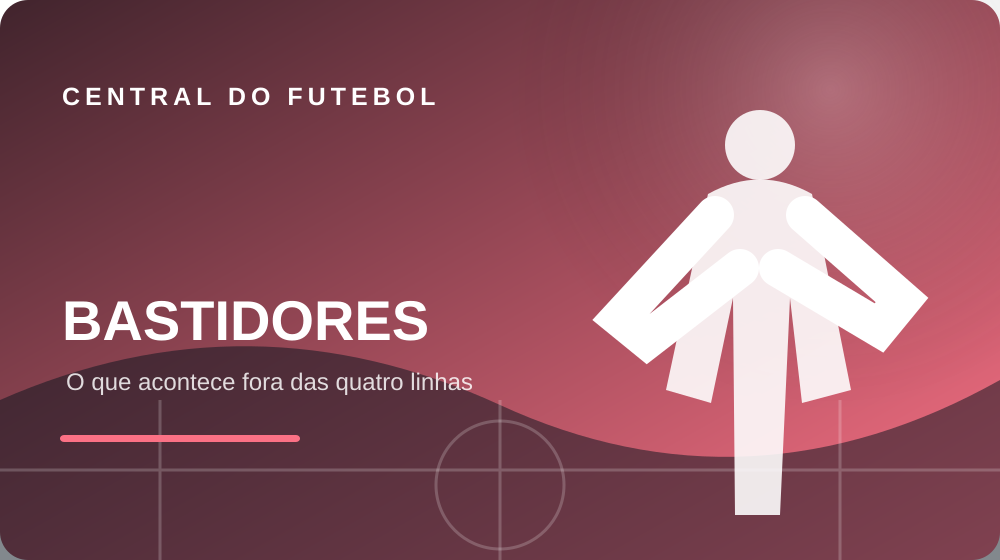
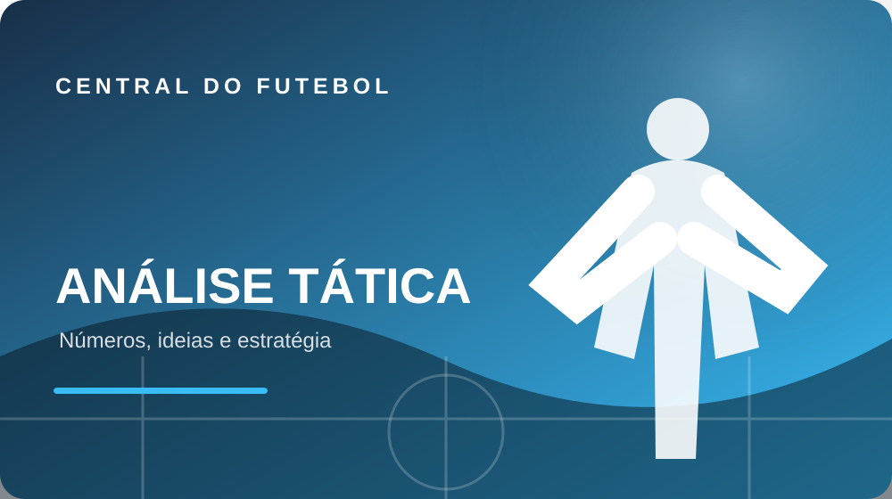
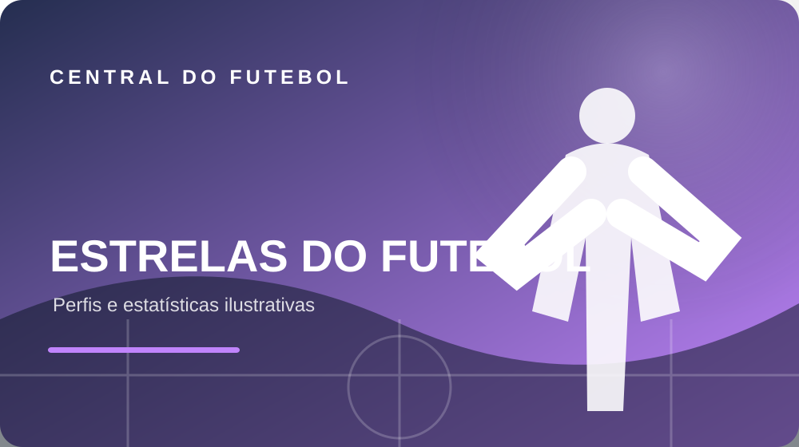

FICÇÃO
Vinícius Júnior — pausa preventiva
Em um cenário inventado, o atacante teria sido poupado de uma sequência de treinos por desconforto muscular leve.
DEPARTAMENTO MÉDICO
Acompanhe boletins fictícios criados para demonstrar organização de notícias esportivas.
CENÁRIOS FICTÍCIOS • NÃO SÃO BOLETINS MÉDICOS REAIS
Em um cenário inventado, o atacante teria sido poupado de uma sequência de treinos por desconforto muscular leve.

Boletim hipotético descreve controle de carga física e acompanhamento do departamento médico.

Em uma história fictícia, o jogador seguiria um plano de recuperação física sem previsão confirmada de partida.